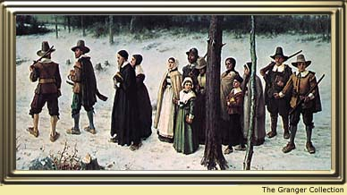

MY FAMILYAt the head of my family is my father, Thomas, and my mother, Rebecca. I am one of six children: first, Priscilla, the eldest; then Edward; myself; Samuel; Bartholomew; and Mary, the youngest.
 My father is many things: a cooper, a farmer, a devout man, and wise. My mother makes the finest lace in the colony. She is able to trade it for many things we need. Two years past, Priscilla married Mr. Richard Gilbert of Charlestown and went to live with him there. In spring, she was delivered of a fine howling baby boy. He was named Robert, after our dear brother, whom God called from us after he developed a fever. |
|
| My Life - My Chores - My Father's House |